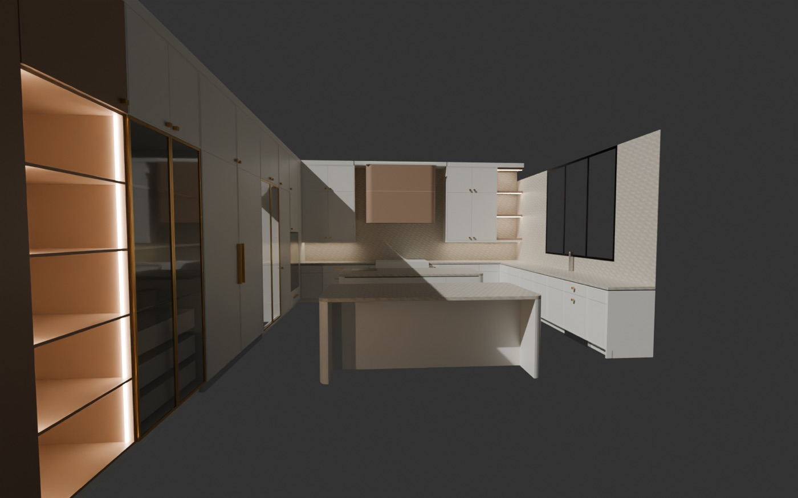

Kitchen in AR
NEWOOD Millwork · full-size 3D model · 375½" × 233½" × 128½"

Open in AR / 用 AR 打开- Open this page in Safari on iPhone or iPad (in WeChat: ··· → Open in Safari). 用 Safari 打开本页（微信里点右上角 ··· → 在 Safari 中打开）。
- Tap the picture or the button, then tap AR. 点图片或按钮，再点上方 AR。
- Point the phone at the floor and move it slowly. The kitchen appears at full size (100%). 手机对着地面慢慢晃，厨房按真实大小出现。
- Walk around it; pinch to make it smaller, drag to move, two fingers to rotate. 走着看；两指捏缩放，拖动移位，两指转方向。
Colours and finishes are approximate. 颜色和材质为示意。